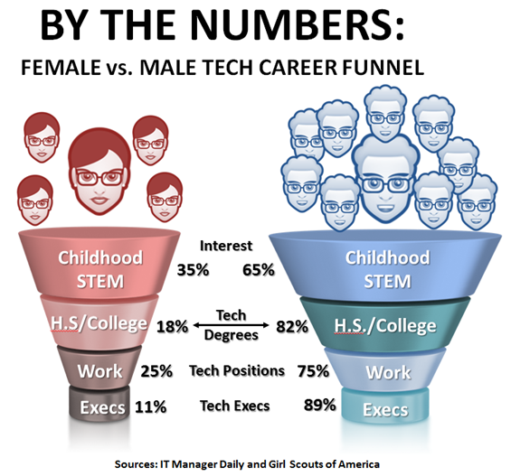

2014. 10. 10
It has been many years that the low women ratio in tech industry is considered as a problem to be fixed. Many professionals investigated what caused this. I found few interesting articles about this issue. From Mark Fidelman’s article on Forbes, it says even though the women to men ratio on interest in science and technology are 35% to 65% in their childhood, it drops intensely when they choose their major in university.The interesting fact in the graph is that the women’s ratio increases for work. It means that once women get to learn technology, they are actually successful in completing the study and finding jobs. Then, what would be the problem that women do not choose to study technology in their college?

The main and base problem of this issue is the perception that studying engineering and tech jobs are mostly for men and only few women who are “different” from all other women. It has been many decades that men are considered to be superior in technology. Most of famed tech inventors and developers are male. Because of this we are unconsciously think it as a fact and since the perception is deeply rooted in our brain, it is hard to change at once. As it is shown on the above image, I believe it is the most important and has to be done primarily to expose women and men in technology education. Also, they need to be taught to have growth mindset to expand their ability and their thought of their own possibility. Growth mindset is discussed in my other blog posting and you can refer to it here.